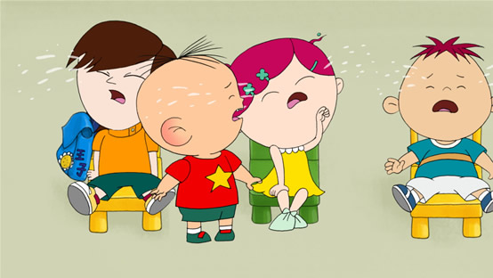
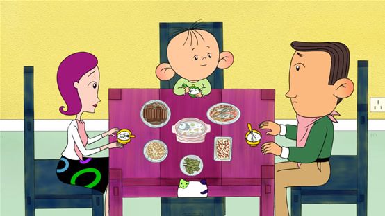
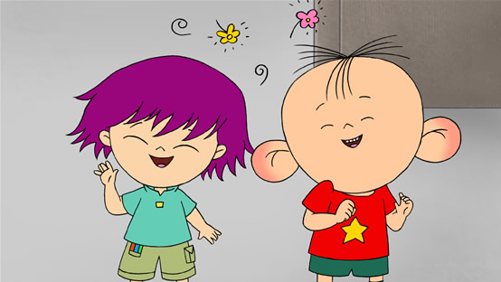
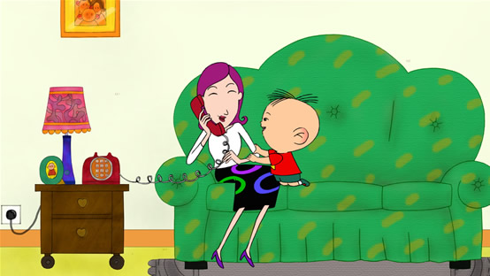
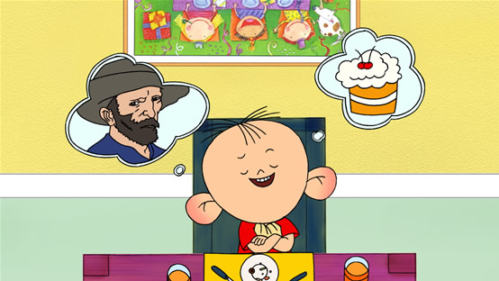

精彩剧情节选
|  |
小豆班的小朋友都是第一天上幼儿园所以离开爸爸妈妈都哇哇大哭， 健康哥哥是班级的老师， 他让小朋友们都做自我介绍， 在过程中图图和班上的张帅子发生争吵， 而小朋友们的生活习惯使健康哥哥十分烦恼。 第一天上幼儿园（上） |
|  |
自从图图和帅子第一回见面就发生争吵， 两个人就很不和睦， 晚上图图妈妈接图图回家， 并且做了一桌子的菜， 一家人正准备吃饭， 图图开始用在幼儿园吃饭的规矩来教爸爸和妈妈妈， 结果一家人闹了笑话。 第一天上幼儿园（下） |
 |
图图和帅子在学校打架， 双方家长都跟着自己的孩子来到了学校， 但是健康哥哥的调解并没有用， 双方谁也不愿意握手言和， 图图和帅子还是相互敌视， 但是当大家吃午饭的时候， 他们发现对方和自己一样都不喜欢吃番茄。 小豆班的战争 |
|  |
图图在幼儿园打架， 图图的妈妈觉得丢了面子就让图图爸爸接图图放学， 而图图在跟小怪说话的时候发现小怪会说话， 第二天图图妈妈和帅子妈妈都去幼儿园见健康哥哥， 才知道两个孩子已经和好如初了， 所以她们也握手言和了。 奇怪的友谊 |
|  |
因为图图问妈妈跟谁打电话， 图图妈妈说是秘密， 然后图图就想知道别人的秘密， 他从小怪那里知道想要知道秘密就要发现秘密， 在幼儿园午睡的时候图图和帅子跑到健康哥哥休息的地方想做恶作剧， 结果看到健康哥哥的秘密。 每个人都有秘密（上） |
|  |
图图在幼儿园知道大虎的力气很大， 王子家里很富有， 帅子像个男孩子， 但是后来他发现他们的秘密， 大虎虽然力气大但很怕黑， 王子的的妈妈虽然很富有但是喜欢吃臭豆腐， 刷子虽然像男孩子但是心里是很温柔的女孩子。 每个人都有秘密（下） |